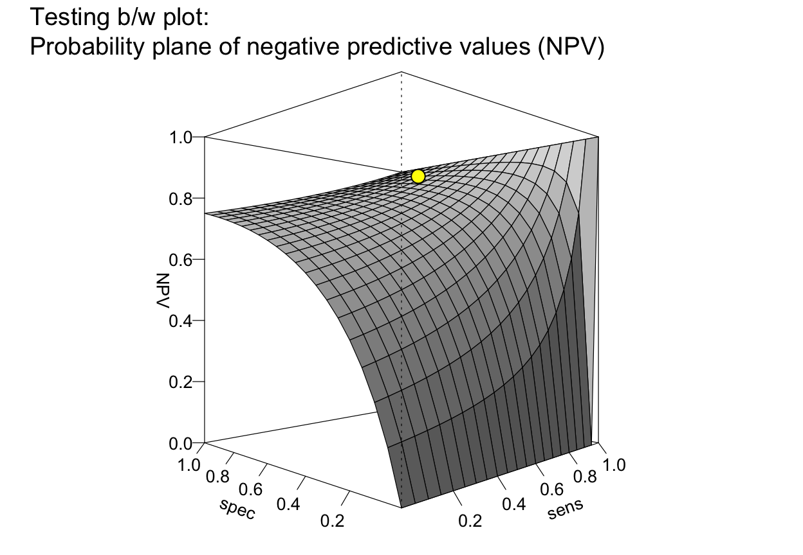
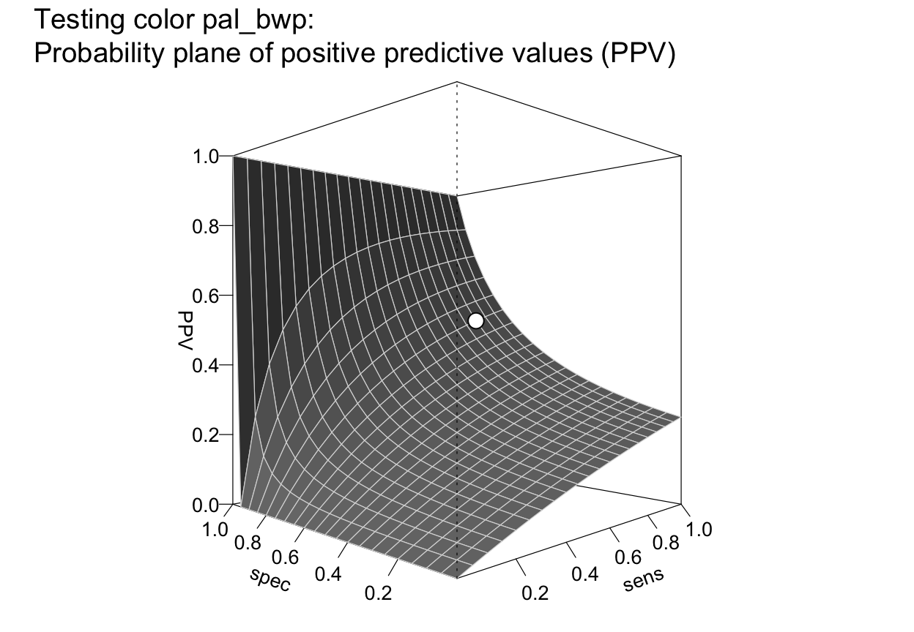
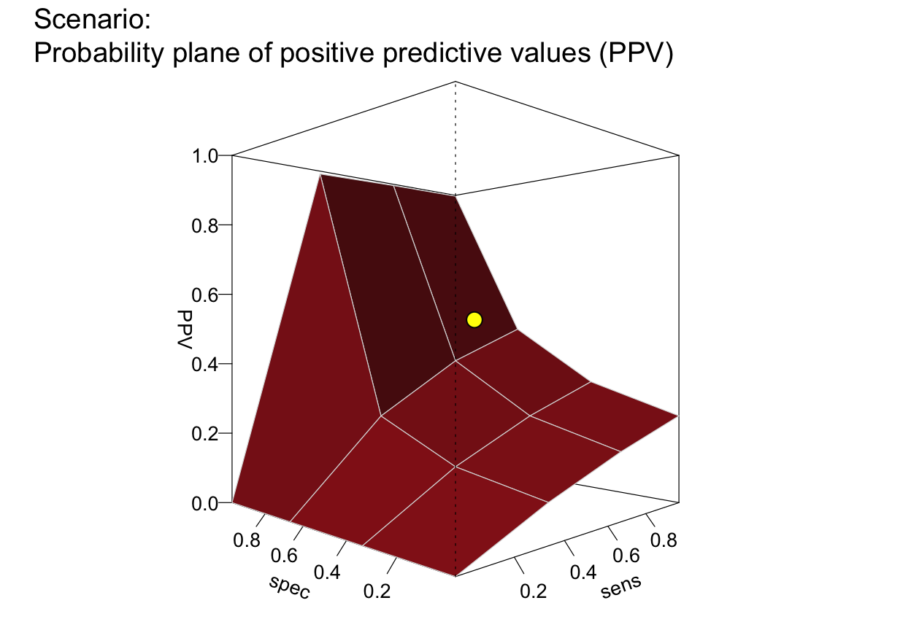
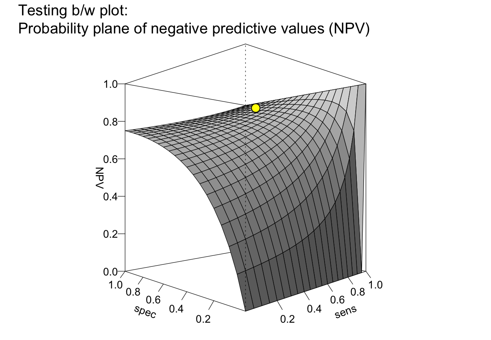
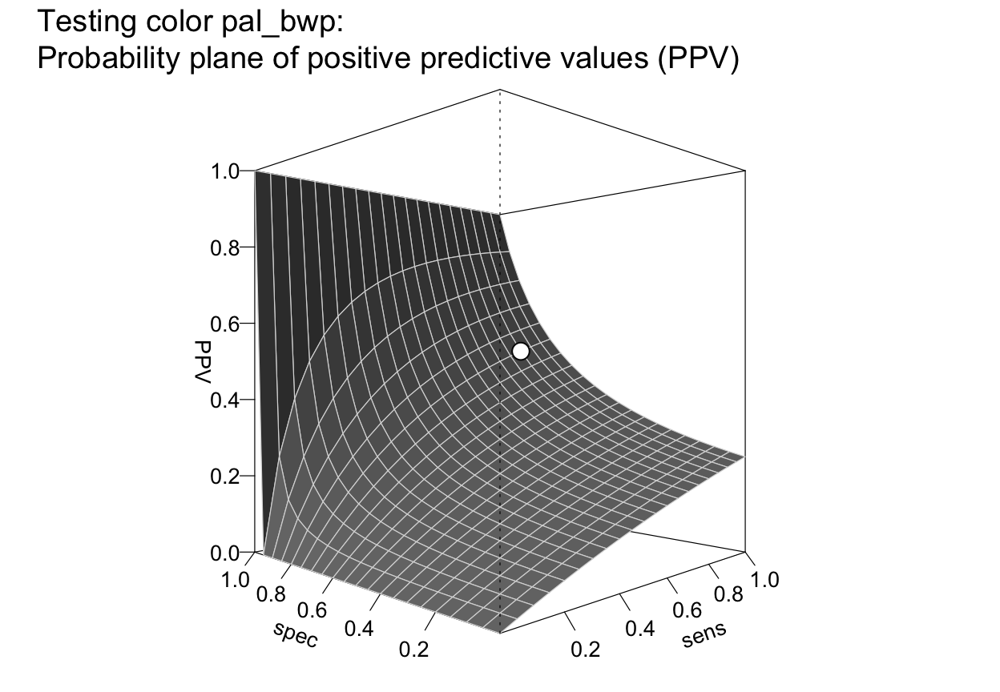
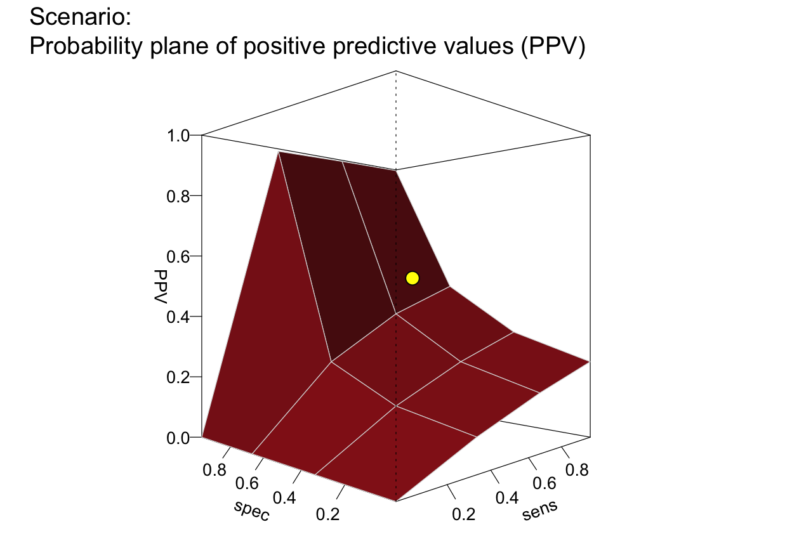

Plot a plane of selected values (e.g., PPV or NPV) as a function of sensitivity and specificity.
Source:R/plot_plane.R
plot_plane.Rdplot_plane draws a 3D-plane of selected values
(e.g., predictive values PPV
or NPV) as a function of
a decision's sensitivity sens and
specificity value spec
for a given prevalence (prev).
plot_plane(
prev = num$prev,
sens = num$sens,
mirt = NA,
spec = num$spec,
fart = NA,
what = "PPV",
what_col = pal,
line_col = "grey85",
sens_range = c(0, 1),
spec_range = c(0, 1),
step_size = 0.05,
show_points = TRUE,
point_col = "yellow",
theta = -45,
phi = 0,
p_lbl = "def",
lbl_txt = txt,
main = txt$scen_lbl,
sub = "type",
title_lbl = NULL,
cex_lbl = 0.85,
col_pal = pal,
mar_notes = FALSE,
...
)Arguments
- prev
The condition's prevalence
prev(i.e., the probability of condition beingTRUE).- sens
The decision's sensitivity
sens(i.e., the conditional probability of a positive decision provided that the condition isTRUE).sensis optional when its complementmirtis provided. Ifsens = NA, thenshow_points = FALSE.- mirt
The decision's miss rate
mirt(i.e., the conditional probability of a negative decision provided that the condition isTRUE).mirtis optional when its complementsensis provided.- spec
The decision's specificity value
spec(i.e., the conditional probability of a negative decision provided that the condition isFALSE).specis optional when its complementfartis provided. Ifspec = NA, thenshow_points = FALSE.- fart
The decision's false alarm rate
fart(i.e., the conditional probability of a positive decision provided that the condition isFALSE).fartis optional when its complementspecis provided.- what
A character code that specifies one metric to be plotted as a plane. Currently available options are
c("PPV", "NPV", "ppod", "acc"). Default:what = "PPV".- what_col
Color for surface facets corresponding to the metric specified in
what. Default:what_coluses color corresponding towhatin currentcol_pal.- line_col
Color for lines between surface facets. Default:
line_col = "grey85".- sens_range
Range (minimum and maximum) of
sensvalues on x-axis (i.e., values inc(0, 1)range). Default:sens_range = c(0, 1).- spec_range
Range (minimum and maximum) of
specvalues on y-axis (i.e., values inc(0, 1)range). Default:spec_range = c(0, 1).- step_size
Sets the granularity of the
sens-by-specgrid. (in range.01 <= step_size <= 1). Default:step_size = .05.- show_points
Boolean option for showing the current value of the selected metric for the current conditions (
prev,sens,spec) as a point on the plane. Default:show_points = TRUE.- point_col
Fill color for showing current value on plane. Default:
point_col = "yellow".- theta
Horizontal rotation angle (used by
persp). Default:theta = -45.- phi
Vertical rotation angle (used by
persp). Default:phi = 0.- p_lbl
Type of label for shown probability values, with the following options:
"abb": show abbreviated probability names;"def": show abbreviated probability names and values (default);"nam": show only probability names (as specified in code);"num": show only numeric probability values;"namnum": show names and numeric probability values;"no": hide labels (same forp_lbl = NAorNULL).
- lbl_txt
Labels and text elements. Default:
lbl_txt = txt.- main
Text label for main plot title. Default:
main = txt$scen_lbl.- sub
Text label for plot subtitle (on 2nd line). Default:
sub = "type"shows information on current plot type.- title_lbl
Deprecated text label for current plot title. Replaced by
main.- cex_lbl
Scaling factor for the size of text labels (e.g., on axes, legend, margin text). Default:
cex_lbl = .85.- col_pal
Color palette (if what_col is unspecified). Default:
col_pal = pal.- mar_notes
Boolean value for showing margin notes. Default:
mar_notes = FALSE.- ...
Other (graphical) parameters.
Details
plot_plane is a generalization of
plot_PV3d (see legacy code)
that allows for additional dependent values.
See also
comp_popu computes the current population;
popu contains the current population;
comp_freq computes current frequency information;
freq contains current frequency information;
num for basic numeric parameters;
txt for current text settings;
pal for current color settings
Other visualization functions:
plot.riskyr(),
plot_area(),
plot_bar(),
plot_crisk(),
plot_curve(),
plot_fnet(),
plot_icons(),
plot_mosaic(),
plot_prism(),
plot_tab(),
plot_tree()
Examples
# Basics:
plot_plane() # => default plot (what = "PPV")
 # same as:
# plot_plane(what = "PPV") # => plane of PPV
plot_plane(what = "NPV") # => plane of NPV
# same as:
# plot_plane(what = "PPV") # => plane of PPV
plot_plane(what = "NPV") # => plane of NPV
 plot_plane(what = "ppod") # => plane of ppod
plot_plane(what = "acc") # => plane of acc
plot_plane(what = "ppod") # => plane of ppod
plot_plane(what = "acc") # => plane of acc
 # Plane with/out points:
# plot_plane(prev = .5, sens = NA, spec = NA, what = "ppv") # plane with 0 points
plot_plane(prev = .5, sens = c(.2, .5, .8), spec = .6, what = "npv") # plane with 3 points
#> Multiple sens/spec values provided: Plotting multiple points on plane.
# Plane with/out points:
# plot_plane(prev = .5, sens = NA, spec = NA, what = "ppv") # plane with 0 points
plot_plane(prev = .5, sens = c(.2, .5, .8), spec = .6, what = "npv") # plane with 3 points
#> Multiple sens/spec values provided: Plotting multiple points on plane.
 # Zooming into sens and spec ranges:
# plot_plane(prev = .02, sens = c(.8, .9), spec = c(.8, .8, .9, .9)) # default ranges
plot_plane(prev = .02, sens = c(.8, .9), spec = c(.8, .8, .9, .9),
sens_range = c(.7, 1), spec_range = c(.7, 1), step_size = .02) # zooming in
#> Multiple sens/spec values provided: Plotting multiple points on plane.
# Options:
# plot_plane(main = "No point and smaller labels", show_points = FALSE, cex_lbl = .60)
plot_plane(main = "Testing plot colors", what_col = "royalblue4", line_col = "sienna2")
# Zooming into sens and spec ranges:
# plot_plane(prev = .02, sens = c(.8, .9), spec = c(.8, .8, .9, .9)) # default ranges
plot_plane(prev = .02, sens = c(.8, .9), spec = c(.8, .8, .9, .9),
sens_range = c(.7, 1), spec_range = c(.7, 1), step_size = .02) # zooming in
#> Multiple sens/spec values provided: Plotting multiple points on plane.
# Options:
# plot_plane(main = "No point and smaller labels", show_points = FALSE, cex_lbl = .60)
plot_plane(main = "Testing plot colors", what_col = "royalblue4", line_col = "sienna2")
 plot_plane(main = "Testing b/w plot", what = "npv", what_col = "white", line_col = "black")

plot_plane(main = "Testing color pal_bwp", col_pal = pal_bwp)

plot_plane(step_size = .333, what_col = "firebrick") # => coarser granularity + color

plot_plane(step_size = .025, what_col = "chartreuse4") # => finer granularity + color
plot_plane(main = "Testing b/w plot", what = "npv", what_col = "white", line_col = "black")

plot_plane(main = "Testing color pal_bwp", col_pal = pal_bwp)

plot_plane(step_size = .333, what_col = "firebrick") # => coarser granularity + color

plot_plane(step_size = .025, what_col = "chartreuse4") # => finer granularity + color
 plot_plane(what_col = "steelblue4", theta = -90, phi = 50) # => rotated, from above
plot_plane(what_col = "steelblue4", theta = -90, phi = 50) # => rotated, from above